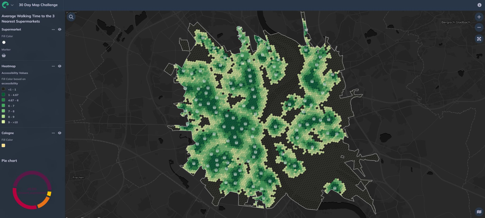

Overview
A hexagonal grid map visualising walking accessibility to supermarkets across Cologne, produced for the #30DayMapChallenge. Each H3 hexagon cell shows an accessibility score based on how easily residents can reach their three nearest supermarkets within a 10-minute walk — revealing gradients that administrative boundaries would otherwise obscure.
Methodology
Accessibility Indicator
Used the Closest Average indicator in GOAT (Plan4Better platform) — measuring the average travel time to the three nearest supermarkets within a 10-minute walking catchment.
H3 Hexagon Grid
Results aggregated to an H3 hexagonal grid rather than administrative units. Hexagons provide consistent cell size and avoid the directional distortion of square grids, making accessibility gradients easier to read spatially.
Spatial Pattern Analysis
Identified high-accessibility concentrations around Ehrenfeld and lower scores in areas where supermarkets are dispersed or where major roads, rail corridors and larger block structures reduce walkability.
Key Findings
- Highest accessibility scores concentrated in Ehrenfeld and inner neighbourhoods with dense retail provision
- Lower scores visible in areas where major infrastructure (roads, rail) fragments the walking network
- Hexagonal grid reveals accessibility gradients at fine spatial resolution without boundary artefacts
Tools & Technologies
- GOAT (Plan4Better) — Closest Average accessibility indicator
- H3 hexagonal grid system for spatial aggregation
- QGIS for cartographic styling and output
- OpenStreetMap pedestrian network data
Context
This map was produced as part of the #30DayMapChallenge on the theme of Hexagons. It draws directly on accessibility analysis methods used in professional planning work at Plan4Better, applied here to a public dataset for a creative mapping exercise.
Interactive Map
Explore the live interactive version of this map on the GOAT platform:
Open Interactive Dashboard